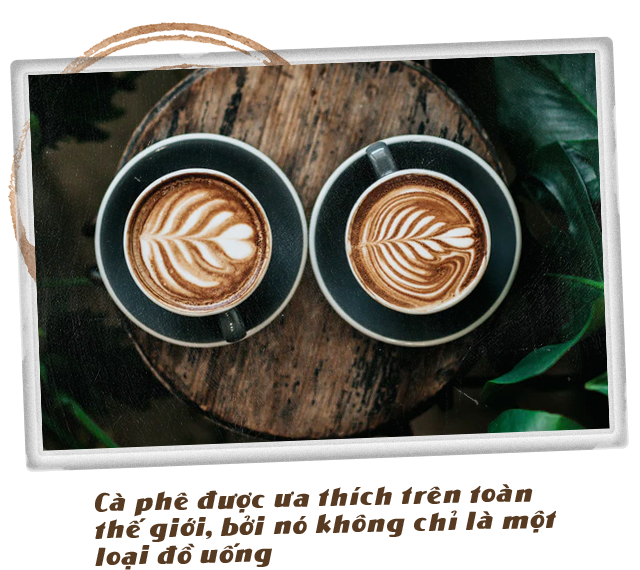

13-12-2020-09.51 A.M
Người Ý đã sáng tạo ra nhà hát, sự lãng mạn, nghệ thuật và ma thuật của trải nghiệm Espresso.
Có một thứ chất lỏng màu đen đang chảy khắp thế giới, bôi trơn bánh răng của mọi nền kinh tế. Nó cũng là một trong những mặt hàng được giao dịch nhiều nhất trên địa cầu. Thậm chí, cũng có một lo ngại với nhu cầu tiêu thụ không hề suy giảm như hiện nay, nguồn tài nguyên của chúng ta một ngày nào đó có thể bị cạn kiệt.
Không phải dầu mỏ, thứ chúng ta đang nhắc đến ở đây là cà phê.
Nhân loại đang uống tới hơn hai tỷ tách cà phê mỗi ngày. Và đối với nhiều người, họ biết mình sẽ không thể làm việc được nếu thiếu nó. Ngay cả các quốc gia có truyền thống uống trà như Trung Quốc, bây giờ cũng bị sự mê hoặc của cà phê quyến rũ.
Chẳng mấy chốc, cà phê sẽ trở thành thứ thức uống yêu thích của cả thế giới.
Nhưng rốt cuộc, điều gì đang thúc đẩy cơn khát cà phê vô độ của loài người, và làm thế nào thứ thức uống đen sánh ấy lại chinh phục được cả thế giới? Liệu đó có phải cái hương thơm lẫn trong cảm giác răng bị bào mòn, tác dụng tâm sinh lý của cà phê hay là thứ văn hóa xoay quanh nó?
Giữa những thách thức từ thực trạng biến đổi khí hậu do con người gây ra, những người nông dân trồng cà phê bây giờ có thể làm gì để vượt qua và giữ được những tách Espresso cho nhân loại?
Câu chuyện của cà phê bắt đầu từ miền cao nguyên tươi tốt ở Ethiopia, quê hương của loài cây Coffea Arabica mảnh dẻ. Mặc dù được gọi là hạt cà phê (bean), nhưng Arabica không phải cây họ đậu.
Quả của chúng trông giống như những trái anh đào khi mới được hái xuống. Sau đó, người nông dân mới tách lấy hạt bên trong, sấy khô trước khi rang chúng thành dạng cứng - chính là thứ hạt cuối cùng mà bạn bỏ vào máy xay.
Người Oromo ở vùng cao nguyên Ethiopia được cho là những người đầu tiên phát hiện ra tác dụng kích thích của thứ “hạt đậu” này, và cà phê cho đến nay vẫn là một phần quan trọng trong truyền thống ẩm thực của họ.
Chính xác khi nào và tại sao cà phê lại được phổ biến ra bên ngoài cộng đồng Ethiopia vẫn là một mảnh đất màu mỡ nơi những truyền thuyết được thêu dệt. Ghi chép lịch sử sớm nhất cho thấy người Sufi ở Yemen là những người đầu tiên đưa được cà phê vượt ra khỏi biên giới Châu Phi vào thời Trung Cổ - cà phê khi đó có mối liên hệ mật thiết với các nghi lễ huyền bí của họ.
“Không có một nghi lễ tôn giáo nào [của người Sufi] được thực hiện mà không có cà phê”, nhà nhân chủng học văn hóa Claudia Roden nói. Caffeine có trong thức uống đã giúp họ kéo dài nghi lễ đến tận đêm khuya, trong khi việc rang hạt rõ ràng được coi là một ẩn dụ cho sự siêu việt của tâm hồn con người.
Tới thế kỷ 17, những quán cà phê nhanh chóng lan rộng khắp Trung Đông và Đế chế Ottoman, nơi chúng thu hút được sự chú ý của các thương nhân phương Tây, những người đã mang thứ đồ uống này trở về nước mình.
Những người đầu tiên uống cà phê là những người có niềm tin vững chắc vào các dược tính của nó. Roden trích dẫn một tờ báo quảng cáo vào năm 1657 mô tả cà phê là một thứ đồ uống “có nhiều đặc tính tuyệt vời như làm lành vết thủng dạ dày, giúp trái tim khỏe mạnh từ bên trong, hỗ trợ tiêu hóa và làm sống dậy tinh thần...”
Theo BBC
"Thành lập vào 2001, sự hài lòng của quý khách đem đến niềm vui và thành công cho chúng tôi."